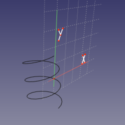
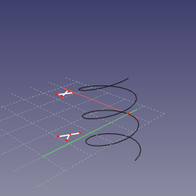
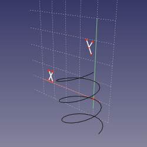
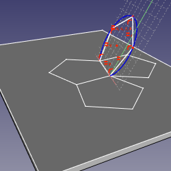

Part Attachment
|
| Menu location
|
| Part → Attachment...
|
| Arbeitsbereiche
|
| Part, PartDesign
|
| Standardtastenkürzel
|
| None
|
| Siehe auch
|
| Platzierung
|
|
Beschreibung
Attachment (Anhängen, Befestigen) ist ein Werkzeug, mit dem Objekte zusammen gehängt werden können. Danach ändert sich die Position des befestigten Objekts gemeinsam mit der des Ausgangsobjekts, wenn dieses bewegt wird.
(Dieses Werkzeug ist in den Beschreibungen von Part und PartDesign noch nicht enthalten [März 2018], muss nachgeholt werden.)
verfügbar in Version 0.17
Anwendung
- Wähle das Objekt, welches zu Befestigen ist.
- Wähle das Part → Attachment... Menü.
- Hinweis: Arbeitet man in PartDesign and und erstellt dort Skizzen, Bezugsgeometrie oder Primitivkörper, sind diese beiden Schritte nicht notwendig, die Parameterseite der Befestigungsmodi wird automatisch geöffnet.
- Unter Bezugelement-Typ Parameter steht anfangs: Nicht gebunden. . Die erste Schaltfläche zeigt Auswählen… , dies bedeutet, es wird eine Selektion im 3D Bildschirmbereich erwartet.
- Wähle nun eines der Grundelemente aus: Eckpunkt, Knoten(punkt) oder Fläche/Oberfläche. Bezugsgeometrie aus Part containers ist ebenfalls wählbar.
- Die erste Schaltfläche ändert ihre Beschriftung nun analog zum gewählten Element. im weißen Feld rechts, wird nun der Name des referenzierten Objekts und des Elements angezeigt. Wird z.b auf einem Quader (Box ) - Primitiv eine Oberfläche gewählt, zeigt das Feld Box:Face6.
- Wähle nun Befestigungsmodus aus der Liste. Die Liste der möglichen Modi passt sich an das gewählte Element an. Angehängt im Modus: wird nun unter der .. Parameter Überschrift angezeigt.
- Um währen der Auswahl Informationen über die Befestigungsmodi zu erhalten, bewegen Sie die Maus über die Liste der Modi und verweilen auf einer Zeile. Der Text erscheint in einem Infofenster ( Tooltip ).
- Bei Bedarf können bis zu 4 weitere Elemente als Referenz gewählt werden, klicke dazu auf die Schaltfläche Referenz2, Referenz3, and Referenz4 und wiederhole Schritt 4.
- Zusätzlich kann eine Verschiebung Attachment Offset angegeben werden.
- Bestätige dann mit OK die Auswahlen.
Optionen
Befestigungs Modus
Deaktiviert
Default, keine Referenz selektiert .
Normal zur Kante
Das Objekt wird rechtwinklig zur Kante erstellt. Eine optionale Auswahl eines Punkts spezifiert die Ausgangsposition .
- Referenzkombinationen
- Kante
- Kante, Knoten
- Knoten, Kante
Ausrichten O-N-X
Verbindet den Objektursprung mit dem ersten gewählten Knoten, und richtet dessen Normal und die Horizontale Flächenachse in Richtung des Knoten/entlang der Linie aus .
- Referenz Kombinationen
- Knoten, Knoten, Knoten
- Knoten, Knoten, Kante
- Knoten, Kante, Knoten
- Knoten, Kante, Kante
- Knoten, Knoten
- Knoten, Kante
Ausrichten O-N-Y
Verbindet den Objektursprung mit dem ersten gewählten Knoten, und richtet dessen Normal und die Vertikale Flächenachse in Richtung des Knoten/entlang der Linie aus .
- Referenz Kombinationen
- Knoten, Knoten, Knoten
- Knoten, Knoten, Kante
- Knoten, Kante, Knoten
- Knoten, Kante, Kante
- Knoten, Knoten
- Knoten, Kante
Ausrichten O-X-Y
Verbindet den Objektursprung mit dem ersten gewählten Knoten, und richtet dessen Vertikale und die Horizontale Flächenachse in Richtung des Knoten/entlang der Linie aus .
- Referenz Kombinationen
- Knoten, Knoten, Knoten
- Knoten, Knoten, Kante
- Knoten, Kante, Knoten
- Knoten, Kante, Kante
- Knoten, Knoten
- Knoten, Kante
Ausrichten O-X-N
Verbindet den Objektursprung mit dem ersten gewählten Knoten, und richtet dessen Horizontale Flächenachse und Normal in Richtung des Knoten/entlang der Linie aus .
- Referenz Kombinationen
- Knoten, Knoten, Knoten
- Knoten, Knoten, Kante
- Knoten, Kante, Knoten
- Knoten, Kante, Kante
- Knoten, Knoten
- Knoten, Kante
Ausrichten O-Y-N
Verbindet den Objektursprung mit dem ersten gewählten Knoten, und richtet dessen Vertikale Flächenachse und Normal in Richtung des Knoten/entlang der Linie aus .
- Referenz Kombinationen
- Knoten, Knoten, Knoten
- Knoten, Knoten, Kante
- Knoten, Kante, Knoten
- Knoten, Kante, Kante
- Knoten, Knoten
- Knoten, Kante
Ausrichten O-Y-X
Verbindet den Objektursprung mit dem ersten gewählten Knoten, und richtet dessen Vertikale und die Horizontale Flächenachse in Richtung des Knoten/entlang der Linie aus .
- Referenz Kombinationen
- Knoten, Knoten, Knoten
- Knoten, Knoten, Kante
- Knoten, Kante, Knoten
- Knoten, Kante, Kante
- Knoten, Knoten
- Knoten, Kante
Befestigungsversatz
Der Ursprung des Objekts orientiert sich am gewählten Vertex. Die Ausrichtung wird von den Einstellungen in der Platzierung beeinflusst.
- Referenz Kombinationen
- Knoten.
Objekt XY
Die Ebene wird an der lokalen XY Fläche des Referenzierten Objekts ausgerichtet.
- Reference Kombinationen
- Alle, Konisch.
Objekt XZ
Die Ebene wird an der lokalen XZ Fläche des Referenzierten Objekts ausgerichtet.
- Reference Kombinationen
- Alle, Konisch.
Objekt XZ
Die Ebene wird an der lokalen YZ Ebene des Referenzierten Objekts ausgerichtet.
- Reference Kombinationen
- Alle, Konisch.
Oberfläche
Die Ebene wird auf eine planare Fläche gelegt ( Flächen Koinzidenz).
- Referenz Kombinationen
- Fläche.
Tangente zur Oberfläche
Die Ebene wird tangential zur gewählten Oberfläche am Knotenpunkt positioniert
- Referenz Kombinationen
- Fläche, Knoten
- Knoten, Fläche
Frenet NB
Plane is set to normal-binormal (NB) axes of Frenet-Serret coordinates at the point of the edge's curve that is closest to the vertex (or defined by MapPathParameter property, if vertex is not linked). The object's origin is translated to the vertex if the vertex is first, or kept at the curve if edge is first. This mode is similar to Normal to edge, except that X axis is well-defined.
- Referenz Kombinationen
- Kurve
- Kurve, Knoten
- Knoten, Kurve
- 
Frenet TN
Plane is set to tangent-normal (TN) axes of Frenet-Serret coordinates at the point of the edge's curve that is closest to the vertex (or defined by MapPathParameter property, if vertex is not linked). The origin of sketch is translated to the vertex if the vertex is first, or kept at the curve if edge is first. Effectively, if the curve is planar, the sketching plane is the plane of the curve.
- Referenz Kombinationen
- Kurve
- Kurve, Knoten
- Knoten, Kurve
- 
Frenet TB
Plane is set tangent-binormal (TB) axes of Frenet-Serret coordinates at the point of the edge's curve that is closest to the vertex (or defined by MapPathParameter property, if vertex is not linked). The origin of sketch is translated to the vertex if the vertex is first, or kept at the curve if edge is first.
- Referenz Kombinationen
- Kurve
- Kurve, Knoten
- Knoten, Kurve
- 
Konzentrisch
Richtet die Ebene so aus, dass sie mit dem oszillierenden Kreis einer Kante übereinstimmt. Ein Optionaler Knoten definiert wo.
- Referenz Kombinationen
- Kurve
- Kreis
- Kurve, Knoten
- Kreis, Knoten
- Knoten, Kurve
- Knoten, Kreis
Rotationssegment
Die Ebene ist senkrecht zur Kante und die Y-Achse ist mit der Achse des Oszillierenden Kreises abgestimmt. Ein optionaler Knoten Link definiert wo.
- Referenz Kombinationen
- Kurve
- Kreis
- Kurve, Knoten
- Kreis, Knoten
- Knoten, Kurve
- Knoten, Kreis
Ebene durch 3 Punkte
Richte die Ebene an 3 Knoten aus
- Referenz Kombinationen
- Knoten, Knoten, Knoten
- Linie, Knoten
- Knoten, Linie
- Linie, Linie
Normale zu 3 points
Richtet die Ebene so aus, das diese durch die ersten 2 Knoten läuft und senkrecht auf einer Ebene steht die durch die 3 Knoten läuft
- Referenz Kombinationen
- Knoten, Knoten, Knoten
- Linie, Knoten
- Knoten, Linie
- Linie, Linie
Faltung
Spezialmodus zum Falten von Polyedern. Wählen Sie 4 Kanten in der Reihenfolge: faltbare Kante, Faltlinie, andere Faltlinie, andere faltbare Kante. Die Ebene wird ausgerichtet, um die erste Kante zu falten. Im folgenden Bild ist es nicht erforderlich, dass beide zu faltenden Blätter die gleichen sind.
- Referenz Kombinationen
- Linie, Linie, Linie, Linie
- 
Trägheit 2-3
Das Objekt wird an einer Ebene befestigt, welche durch die zweite und dritte Hauptträgheitsachse (Massenschwerpunkt) verläuft.
- Referenz Kombinationen
- Alle
- Alle,Alle
- Alle, Alle, Alle
- Alle, Alle, Alle, Alle
Befestigungsversatz
Der Befestigungsversatz wird verwendet, um einen linearen oder rotatorischen Offset vom referenzierten Objekt anzuwenden. Die Eingabe wird erst aktiv, wenn ein anderer Verbindungsmodus als "Deaktiviert" gewählt wurde.
- X: legt einen Versatzabstand in der X-Achse des Referenzobjekts fest.
- Y: legt einen Versatzabstand in der Y-Achse des Referenzobjekts fest.
- Z: legt einen Versatzabstand in der X-Achse des Referenzobjekts fest.
- Yaw: rotiert das angehängte Objekt um die Z Achse des Referenzobjekts.
- Pitch: rotiert das Element entlang der Y Achse des Referenzobjekts.
- Roll: rotiert das Element entlang der X Achse des Referenzobjekts.
- Tausche Seiten: Wenn gewählt , wird das Objekt in der XY Ebene umgekehrt .
Einschränkungen
- Part und Body container werden nicht unterstützt. Während es möglich ist, Befestigungsmodi zu verwenden, um sie auszurichten, wird die Befestigung nicht parametrisch verknüpft.
{kind=link}
{kind=link}
{kind=link}
{kind=link}
{kind=link}